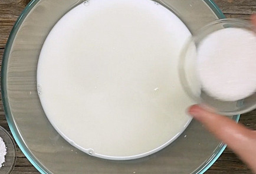

|  |
1.Налить в подходящую емкость молоко комнатной температуры, вбить туда яйца, добавить соль и сахар. |
.jpg) |
2.Постепенно подсыпать муку, при этом помешивая, чтобы не получалось комочков. Они все равно будут получаться, так что помешивать надо качественно. Довести до консистенции нежирной сметаны. Добавить разрыхлитель. |
.jpg) |
3.Все размешать, оставить на 15–20 минут и потом добавить растительное масло. Кстати, тесто для блинов можно оставить в холодильнике и приготовить блины позже. С ним ничего не случится. |
.jpg) |
4.На сильно раскаленную сковороду налить немного масла и жарить блины. |